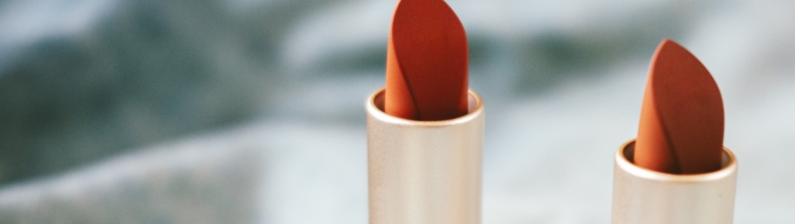
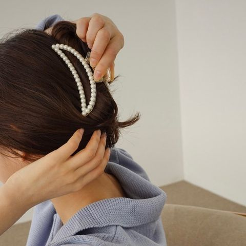
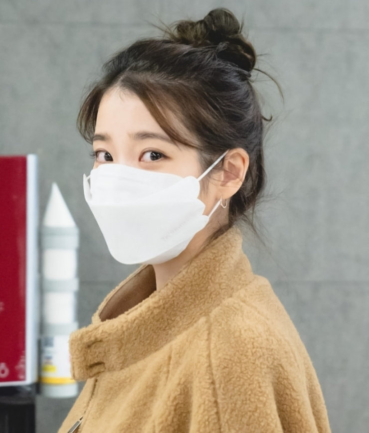

Beauty
美容大国と呼ばれる韓国から様々なトレンドが日本にも入ってきています。
私が一緒に授業を受けている韓国語選択の学生たちは皆韓国の最新トレンドに敏感で、普段の服装に取り入れている人も多いんです。
そこで、このページでは、私が韓国好きの友達をみて気づいた韓国流行スタイル3選を紹介します！
1．집게핀(ジッケピン)

日本ではヘアクリップと呼ばれている집게핀(ジッケピン)を使ったヘアスタイルが本当に多いです。
ヘアゴムを使わずにアップスタイルが楽しめて、カラーバリエーションも豊富でかわいいのが人気の理由のようです。デザインも様々なので自分の好みに合ったものが見つけられると思います！
2．色白美肌
韓国では芸能人も一般人もとにかくお肌が白いイメージが強いです。
トーンアップクリームや肌色補正の下地を使って真っ白なお肌を演出する人が多いです！メイクではチークを使わないことでより白く見せる効果があるそうです。ベースづくりに大切なスキンケアにこだわる人が多い印象です。
3．KF94マスク

最近使っている人を多く見かけるKF94マスク。
KFとは「Korea Filter」の略で94は粒子の経過を94%防ぐことができるという意味だそうです。
息苦しくない、メイクが崩れにくい、横顔が綺麗に見えると評判です！